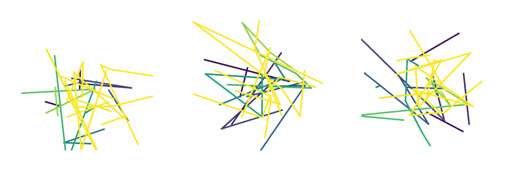

Drawing sketches with guided flow matching
For CMPUT 652, a course on procedural content generation with machine learning, Riley Zilka, Hasti Karamdel and I built a model that draws sketches one point at a time. We trained it on sketches from Quick, Draw!, the TU-Berlin sketch dataset and the Sketchy database, then had a Barrett WAM draw what it generated. The code is on GitHub.
It’s built on Diffusion Policy, which generates robot actions with a diffusion model. A sketch has the same shape as a robot trajectory: a sequence of points, each with an \(x\), a \(y\) and whether the pen is down. We swapped the diffusion model for flow matching and conditioned it on the class of sketch to draw, like apple, bee or star.
Flow matching
A training sketch \(x_1\) is a chunk of 64 points. Pair it with Gaussian noise \(x_0\) of the same shape, pick a time \(t\) between 0 and 1, and slide along the straight line between them:
\[ x_t = (1 - t)\,x_0 + t\,x_1 . \]The network \(v_\theta(x_t, t, c)\), given the class \(c\), learns the velocity along that line:
\[ \mathcal{L}(\theta) = \mathbb{E}_{t,\,x_0,\,x_1}\big\| v_\theta(x_t, t, c) - (x_1 - x_0) \big\|^2 . \]To draw something new, start from fresh noise and integrate \(\dot x = v_\theta(x, t, c)\) from \(t = 0\) to \(t = 1\), here in 100 Euler steps.

Guidance
During training we swapped the class label for a null token a small fraction of the time (1% in the final runs), so the same network also learns an unconditional velocity \(v_\theta(x, t, \varnothing)\). At sampling time we mix the two:
\[ \tilde v = (1 - w)\,v_\theta(x, t, \varnothing) + w\,v_\theta(x, t, c). \]Here \(w\) is the guidance weight. At \(w = 1\) this is the plain conditional model; \(w > 1\) pushes the sample further toward the class and away from the unconditional average.
A whiteboard that pushes back
For the WAM to draw, the pen has to stay in contact with the board without digging in, so I built a whiteboard on a four-bar linkage that presses up against the pen with a constant force. Four linear rods with bearings at its corners keep it level as it moves.
Questions or comments? Email me at justin@justinvalentine.ca.
Comments